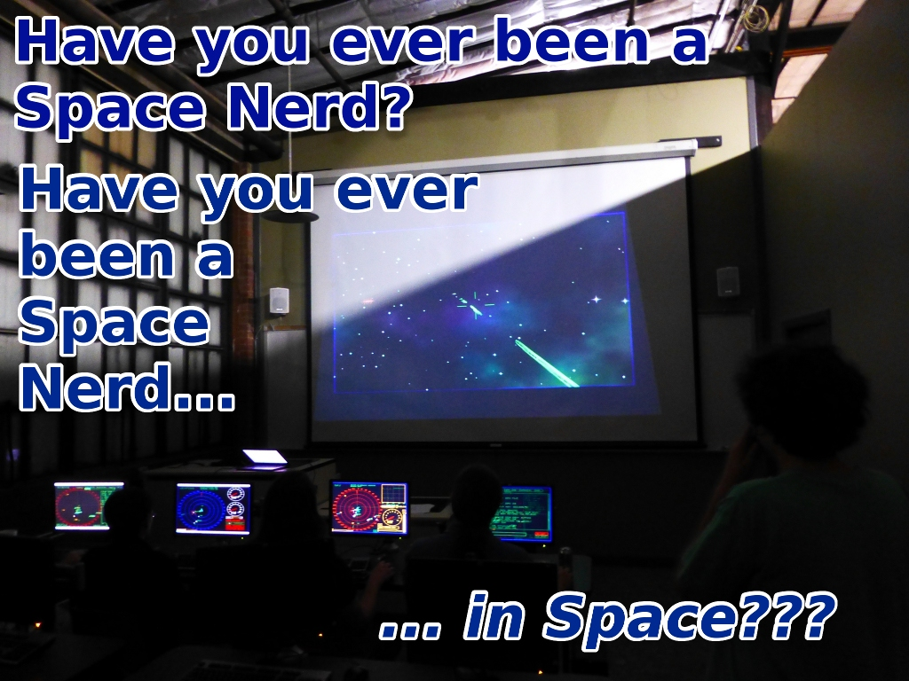

Space Nerds In Space

Space Nerds In Space is a cooperative multiplayer networked starship simulator for linux (and I'm told it works on Mac OSX too.) The idea is you get several of your friends together with their computers in a room with a projector. One computer runs the central server simulation of the game's universe. Each player's computer acts as a station on a simulated starship. For example, there are stations for Navigation, Weapons, Engineering, Communications, Damage Control, and the "Main View" (an out-the-window 3d rendering.) Multiple starships each with their own team may connect to the server for bridge-vs-bridge combat, or for cooperative play. Additionally, a game master may inject and control various NPC ships into the game to entertain the players, and scenarios may be constructed with a Lua based scripting API.
Latest development video (July 2014):
There is a (so far) year long thread on freegamedev.net which is something like a development blog.
The source code is here: Space Nerds In Space github page
Build dependencies
The above list may be incomplete, and these are the package names on mint 13 / ubuntu, so may be different on RPM based systems.
If you don't have linux, I have instructions for building a linux live DVD that you can play the game from without affecting your pre-existing OS install (but no guarantees -- it should be ok, but don't come crying to me if this procedure trashes your hard drive.)
Here is a short mini-documentary created at the premier hackerspace of Houston, TX, TX/RX Labs, camera work and editing by Jack Younger.
Here is a youtube playlist of development videos for Space Nerds In Space spanning the time from the very beginning when the game was literally not much more than just a bunch of dots on the screen up until the present day.
Here is a set of slides from a talk I gave about procedurally generating gas giant planet textures: Procedurally Generating Gas Giant Textures.
Here is a slideshow about the implemenation of planetary rings and shadows cast by and on them in Space Nerds In Space.
Here is a slideshow about 'earthlike', which is a program used to generate some of the earthlike planet textures within Space Nerds In Space. (Use arrow keys to navigate the slideshow. And press F11 for full screen.)
Please keep in mind that this program is still very much a work in progress, so there are a lot of rough edges and sharp corners everywhere, though the code is pretty stable in the sense that it really doesn't crash much at all (if you find it crashing, please let me know via github's issue reporting system.)
Instructions for creating a Live DVD image to run the game
Warning: if this trashes your hard drive, you're on your own. This procedure worked for me, but you assume all risk and responsibility for the safety of your data.
These instructions assume you have a Mint 13 linux distro running to create the DVD ISO image. You can use virtualbox and install linux Mint 13 on the virtual machine to make the ISO, then when you're done, you can trash the virtual machine. Linux Mint 13 ISO can be found here: http://www.linuxmint.com/oldreleases.php
Install the package "mintconstructor" from the repositories
sudo apt-get install mintconstructor
Open a terminal
Type sudo /usr/lib/linuxmint/mintConstructor/mintConstructor.py
In the mintconstructor window that opens:
In the "Directory" field, choose a directory for the ISO (use a new
directory with nothing in it for this) Make sure to select the
"New project" radio option
Click the browse button on the right of the "ISO file" field and
point it to your ISO file
(in my case I used linuxmint-13-cinnamon-dvd-32bit.iso from here: http://www.linuxmint.com/edition.php?id=105
Click "Next" and then "Yes" to confirm.
Wait for it to do its thing for a bit, then click the button it
presents to open a chrooted environment (it opens an xterm). In
the xterm:
apt-get install build-essential
apt-get install portaudio19-dev
apt-get install libvorbis-dev
apt-get install libgtk2.0-dev
apt-get install git
apt-get install stgit
apt-get install openscad
apt-get install libgtkglext1-dev
apt-get install liblua5.2-dev
apt-get install libglew1.5-dev
(hope I didn't miss any packages -- if you find I did, let me know.)
If the openscad package isn't around, you can get it from here:
http://www.openscad.org/downloads.html
and then from outside the chrooted environment, copy
openscad-2013.0.x86-32.tar.gz into your chroot directory/root
Then, back in the chrooted xterm:
cd /root
tar xzvf openscad-2013.01.x86-32.tar.gz
cd openscad-2013.01/
./install.sh
cd ..
git clone https://github.com/smcameron/space-nerds-in-space.git
cd space-nerds-in-space/
make
(now Space Nerds in Space has been built within the chrooted env.)
Once you're finished making modifications, make sure to clean up with the following commands:
Now clean up the chrooted env (and yes aptitude takes the weird
tilde options for some reason):
aptitude purge ~c
aptitude unmarkauto ~M
apt-get clean; rm -rf /var/cache/debconf/*.dat-old; rm -rf /var/lib/aptitude/*.old; rm -rf /var/lib/dpkg/*-old; rm -rf /var/cache/apt/*.bin; updatedb
history -c
rm /root/.bash_history
rm /root/.nano_history
history -c
exit
(xterm will close)
Click Next
Give your ISO a description (which will be embedded as the name of the CD
or USB stick onto which the ISO is burnt) Don't pick too long of a name though
because if you do, it won't work.
Click Next
Iso image will be made
Then to run the game, burn the iso to dvd several times, and boot up all your machines from dvd.
Open up a terminal, type "sudo su -" (no password -- it's a live dvd)
Then, cd to space-nerds-in-space
Has to be root because we installed spacenerds in space into /root/space-nerds-in-space above when making the dvd -- this could be worked around by chowning it all to user "mint", perhaps putting it someplace else before making he ISO image, but I don't have the exact instructions to do that, and didn't think to do it,but if you're paranoid, you probably want to think about that.
Repeat for several machines on your lan, say, five of them or so.
On one machine that is connected to a projector, note the IP address: (run ifconfig to figure this out.)
Then start the snis client:
./snis_client
From there, start the lobby server on localhost, start the gameserver, connect to lobby, and connect to the gameserver.
Note the shipname and password you use (make up what you want).
On the remaining machines, start snis_client, replace the lobby host "localhost" with the ip address noted above, fill in only the shipname and password as above, and connect to the lobby, then to the gameserver. You can be choosy about the 'roles' for each station at this point, but you don't have to.
That's it.
btw, prior to making live dvd iso's and burning a bunch of dvds, we tried to run the game in linux installed to virtual machines on the windows boxes -- that didn't work out so well, performance was kind of crap for whatever reason. With the dvds, performance was fine at least for the few minutes the network was working. They were relatively low performance, inexpensive USB flash drives though.
The code is licensed under the GPL v. 2, or at your option, any later version. Audio files have various other licenses, typically some variant of a Creative Commons license.